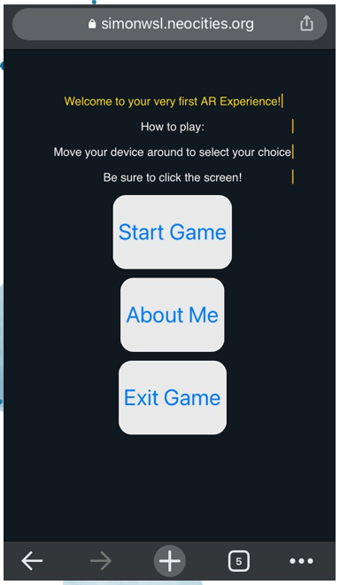
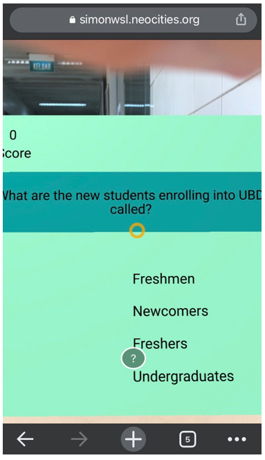
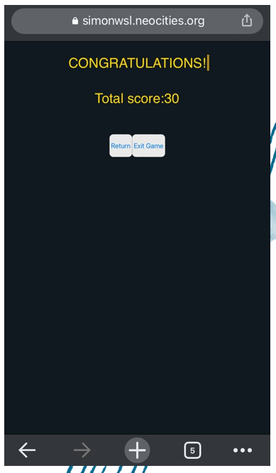

Computer Science Graduate | Technical Support Specialist
Download CVI am a Computer Science graduate with experience in technical support, 3D printing, software testing, and web development. I enjoy solving technical problems and helping users understand technology.
Utamatech B Sdn Bhd



The location-based augmented reality quiz web application developed as my final year project at Universiti Brunei Darussalam.
The application combines GPS-based AR features with interactive quizzes, allowing users to answer questions through virtual elements placed in real-world locations.
Technologies:
HTML5, CSS3, JavaScript, JSON, A-Frame
A personal portfolio website created to showcase my technical support experience, projects, and programming skills.
Technologies:
HTML5, CSS3, JavaScript, Git, Github Pages
GitHub: github.com/simonwsl
LinkedIn: linkedin.com/in/mohd-wusalim